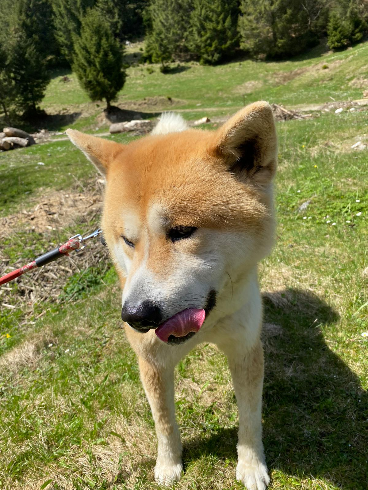
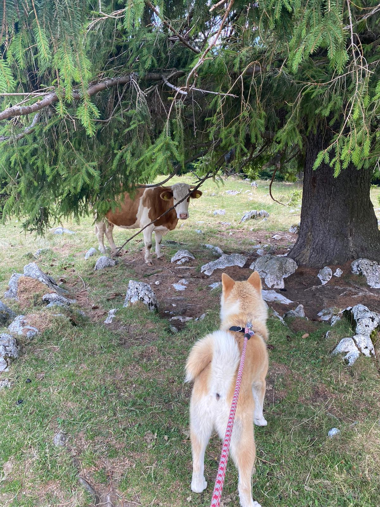
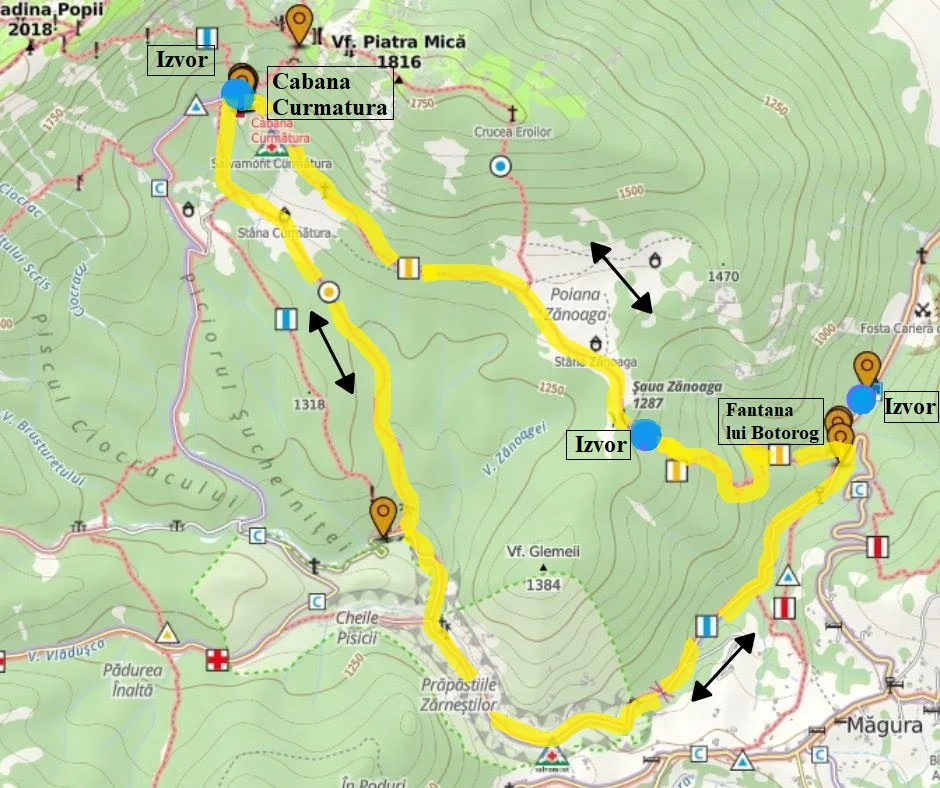
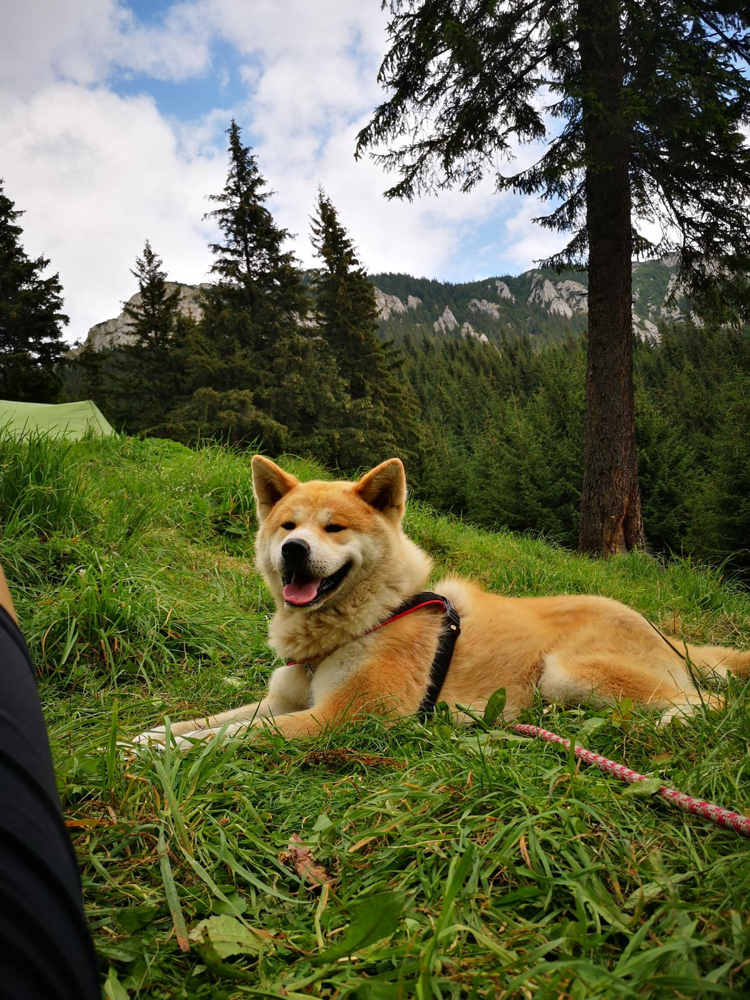

Am implinit doi ani si imi place tare mult sa ma plimb in natura.
In drum spre cabana Curmatura m-am ratacit si m-am gandit sa o intreb pe doamna vacuta care este drumul spre cabana.
Doamna vacuta se numeste Fulga.
A fost amabila si mi-a daruit o harta cu traseul pana la cabana.
Dupa cum puteti observa am ajuns cu bine la cabana Curmatura.
Imi place tare mult aici, cu siguranta voi reveni.
Am mers pana la Curmatura:
Am uitat sa va spun ca plimbarea mea a fost un cadou de la parintii mei.
Am primit cadou de 1 iunie o plimbare prin natura.
Ce credeti ca am mai primit? Apasa botonul de mai sus pentru a afla si tu.
Inainte de a incheia acest capitol daca doresti sa afli cati km imi place sa merg cand ies la plimbare apasa butonul de mai jos.
Dar la un drum asa lung afla si cati litri de apa beau.